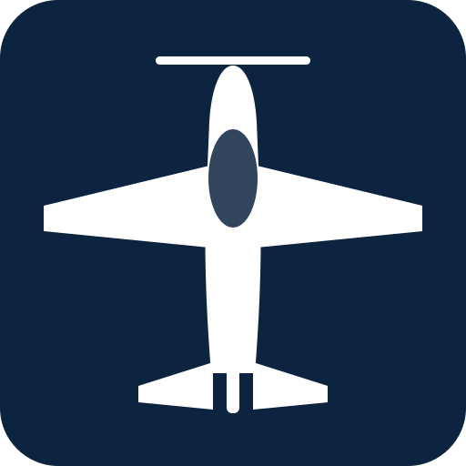

This tool assists flight preparation and does not replace the aircraft flight manual. The pilot in command remains solely responsible.
It contains no aircraft or aerodrome data of its own: every figure it uses is one you enter, taken from your own flight manual and your own aerodrome chart. Its corrections for altitude, temperature, wind and slope are approximations, described in full under “Method and assumptions”.
A new version is available. Reload to apply it.

Takeoff & Landing Perf
Aircraft — from your flight manual
Fill in only the manoeuvre you need. Takeoff and landing are worked out independently of each other.
Takeoff
Landing
Optional
⚠ Reference conditions assumed
Figures are assumed to be sea level, 15 °C, no wind. If your manual's table is referenced to other conditions, this app will underestimate your distances.
Runway — from your aerodrome chart
Weather & margin
Wind
Altimeter — field / density
Aeronautical day / night
Takeoff
Ground roll
–
Over 15 m / 50 ft
–
With margin
–
Available
–
Landing
Ground roll
–
Over 15 m / 50 ft
–
With margin
–
Available
–
Method and assumptions
Warning. This tool assists flight preparation. Its altitude, temperature, wind and slope corrections are approximations applied to figures you supply, not certified performance data. It does not replace your aircraft's official Flight Manual, the actual weather of the day, or the judgement of the pilot in command. Always check your real margins before every takeoff and landing.